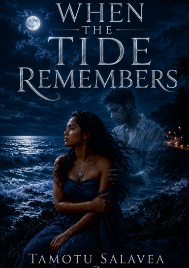

When the Tide Remembers

About the Book
Some promises are never forgotten. Some loves never let go. In the quiet coastal village of Leone, Mareta has always believed her future would begin and end with the boy she has loved since childhood. But when tragedy shatters that dream, she is left struggling to find her place in a world forever changed. As strange occurrences begin to surround her, old stories whispered by elders no longer seem like myths, and the line between memory and mystery grows increasingly thin. Drawn toward secrets buried beneath the island's beauty, Mareta discovers that the past is never truly gone—and that some promises have a way of calling you home. Set against the breathtaking landscapes and rich traditions of American Samoa, When the Tide Remembers is a moving tale of love, loss, faith, and hope. Blending romance, mystery, and the supernatural, it is a story about finding the strength to keep living, even when your heart longs for what the tide has carried away. Because while time may fade footprints from the shore, the tide remembers every promise ever made.
READER VOICES
Reviews & Thoughts
Finished When the Tide Remembers? Share your honest thoughts with future readers.
Be among the first to share a review.
Reader reviews are moderated before publication to keep this space thoughtful, genuine, and free from spam.
Book Details
ISBN-13: 978-1-105-06016-8
Format: Paperback
Pages: 132
Price: $19.99